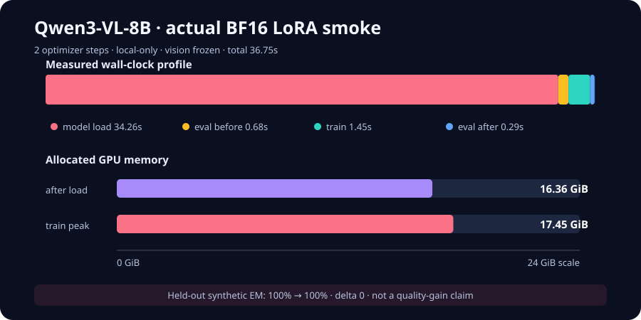

Skip to case study
← All projects
CASE STUDY · 02
Actual GPU smokeQwen3-VL LoRA execution
A bounded, local-only BF16 training and held-out generation smoke.
ROLE SIGNALResource-bounded multimodal post-training with auditable data and gradient contracts.

2 / 2real LoRA steps36.75 s total
7.67Mtrainable parameters0.0874% of 8.77B
17.45 GiBpeak GPU allocatedBF16 · vision frozen
100% → 100%held-out exact matchdelta 0 · n=3 synthetic
01 / PROBLEM
The research question
Can a local 8B vision-language model be adapted with an auditable, memory-bounded training contract?
02 / CONTRIBUTIONS
What this work adds
01
Leakage-resistant data
Image-SHA grouped splits keep questions about the same pixels out of both train and evaluation.
02
Audited adaptation
Assistant-only labels, a frozen vision tower, and exact q/k/v/o LoRA target accounting make the gradient path inspectable.
03
Failure-preserving research
The 32B FP8 teacher failure is retained as negative evidence instead of being converted into a distillation claim.
03 / SYSTEM
System path
image-grouped manifests → multimodal collator → frozen vision tower → text-attention LoRA → paired held-out generation
Two optimizer steps completed with a frozen vision tower, an audited LoRA-only trainable path, and before/after held-out generation.
04 / EVIDENCE
Measured result, traceable artifacts
05 / BOUNDARY
What the evidence does—and does not—support